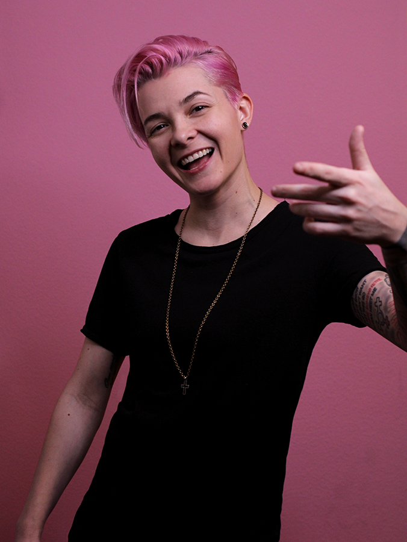

ABOUT ME

I'm a first generation LGBTQIA+ Polish-American, walking high-fantasy Encyclopedia, and parent to a Savannah cat. I've been all over the world, and worked in many of the different industries on it. I first began drawing when young, and that took me into teaching myself how to use Photoshop in high school, which then pushed me to college to follow my ambition in creating the very video games I love playing.
My ambitions didn't stop there, however; just before the pandemic hit I joined a Full Stack Web Developer Bootcamp, solely as a hobby. I did this while managing a team of artists full-time at my current workplace, and received a promotion while attending classes at night! My drive to continue learning and growing while also prioritizing my career keeps me from being able to sit still, I love a challenge.
I have so many interests on so many spectrums; I'm a writer of short stories and poetry, I create art both on paper and digitally (2D and 3D), I've managed teams and prepared interns for their entire career, I've built upon old tech (EverQuest) and new (Virtual Reality). Each one of my positions either used proprietary software or new technology that I had not previously used, which has turned me into a very self-sufficient and adaptable worker capable of exceptional critical thinking.